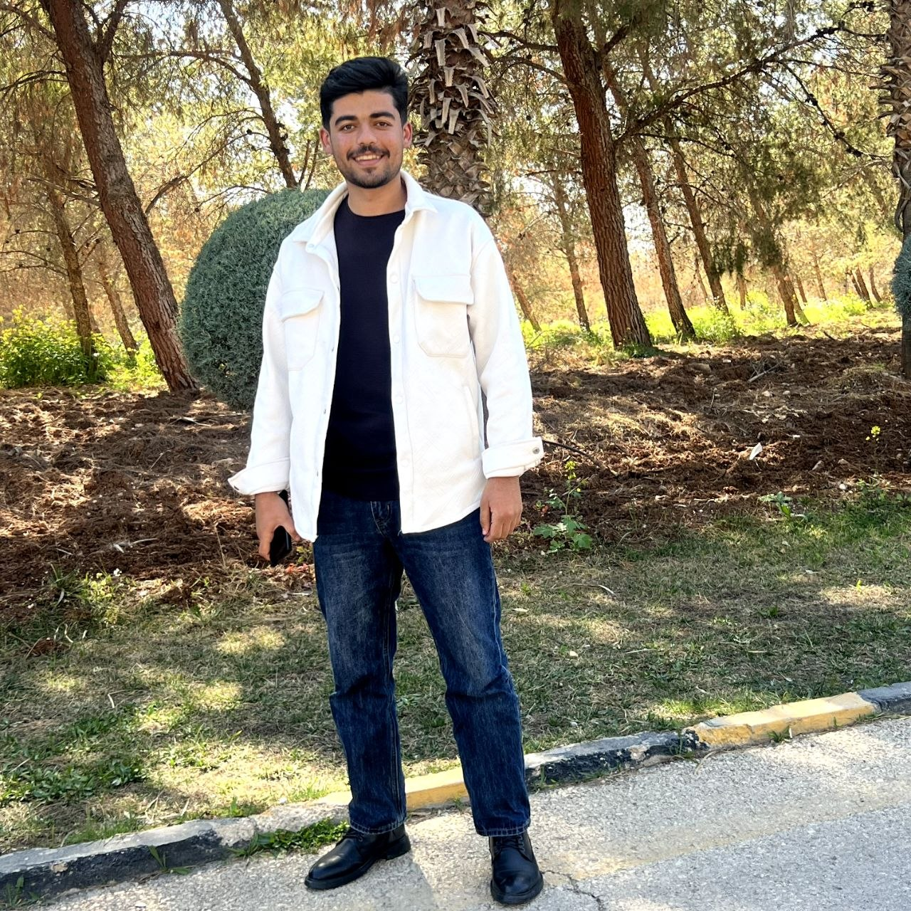

CYBERSECURITY · FOURTH YEAR
Building a safer
digital world.
Hello, I’m محمد كمال محمود دراوشه, a fourth-year Cybersecurity student interested in protecting the systems and people we rely on every day.

SECURITY MINDED.
HOW I WORK
Good security
starts with people.
- Teamwork
- Analytical thinking
- Problem-solving
- Communication
- Adaptability
MY TOOLKIT
Always learning.
Always curious.
A few of the languages and tools I use to explore, build, and understand secure systems.
| AREA | TECHNOLOGY | WHY IT’S IN MY TOOLKIT | EXPLORE |
|---|---|---|---|
| Language | Python | Automation, scripting & security analysis | python.org ↗ |
| Network analysis | Wireshark | Inspecting network traffic and protocols | wireshark.org ↗ |
| Security testing | Kali Linux | Learning hands-on penetration testing | kali.org ↗ |
| Framework | MITRE ATT&CK | Understanding adversary tactics and techniques | attack.mitre.org ↗ |
LOOKING AHEAD
Where Do I See Myself
in 4 Years?
In four years, I see myself working as a cybersecurity professional who helps organizations find and fix weaknesses before they become incidents. I hope to deepen my skills in digital forensics and incident response, learning how to turn evidence into clear answers. I also want to build practical experience with cloud security as more services move online. Along the way, I plan to earn respected industry certifications and keep learning from real projects. My goal is to make technology safer while staying curious, ethical, and collaborative.